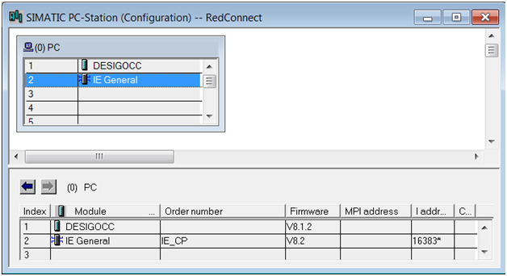

(Optional) Configure S7 RedConnect (SoftNet-IE)
Same procedure as described in the chapter Configuring S7-RedConnect (HardNet-IE) and Import SIMATIC PC-Station in the System Computer with following modifications:
- SIMATIC NET is installed and licensed on the Desigo CC computer (Softnet-IE S7)
- A hardware installation (CP) on the Desigo CC computer is not required.
- On the STEP7 engineering computer, insert a SIMATIC PC-Station in the STEP7 project.
- The SIMATIC PC-Station consists of a user application (SW8.1.2) and a substitute for a CP (IE_General, SW8.2).
Hardware Configuration

- Double-click IE_General.
- In the SIMATIC Manager window, enter the IP address of the SIMATIC PC-Station.

NOTE:
IE_General can only communicate with CP443 (ISOonTCP) or CPU400H-PN because the fault-tolerant connection only works with an IP address.